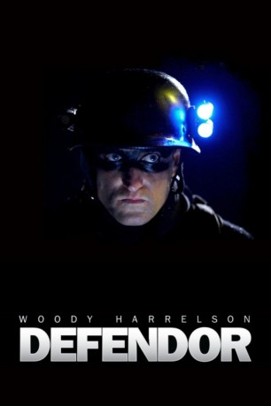

#1609 Defendor
 
 IMDB-Wertung: 6.8 / 10
IMDB-Wertung: 6.8 / 10  Metascore: 57
Metascore: 57 
Seit er als frisch der Mutter beraubter Knabe einen Verweis des Großvaters auf die Verantwortung der Pharmaindustrie ebenso wörtlich wie falsch verstand, fühlt sich der nicht besonders kluge, aber herzensgute und nunmehr in den besten Jahren befindliche Sonderling Arthur berufen, Nachts auf den urbanen Straßen als rächender Superheld Defendor seine alte Nemesis Captain Industry zu jagen. Als er von einer freundlichen Junghure erfährt, dass jemand in der Stadt Drogen verkauft, glaubt er, ihn entdeckt zu haben - und erklärt einem ahnungslosen Großdealer den Krieg.
Jahr: 2009
Dauer: 101 Minuten
FSK: 12
Land: Kanada Studio: Sony Pictures Home EntertainmentTonspuren: DD5.1 - ,
Untertitel:
Auflösung: 1080p (1920x808) Größe: 7608 MB
Genre: Komödie, Krimi, Drama
Regisseur: Peter Stebbings
Drehbuch: Peter Stebbings
Soundtrack: John Rowley
Darsteller:
 Woody Harrelson als Arthur Poppington / Defendor
Woody Harrelson als Arthur Poppington / Defendor Elias Koteas als Sgt. Chuck Dooney
Elias Koteas als Sgt. Chuck Dooney Michael Kelly als Paul Carter
Michael Kelly als Paul Carter Sandra Oh als Dr. Ellen Park
Sandra Oh als Dr. Ellen Park Kat Dennings als Katerina Debrofkowitz
Kat Dennings als Katerina Debrofkowitz Clark Johnson als Capt. Roger Fairbanks
Clark Johnson als Capt. Roger Fairbanks- Lisa Ray als Dominique Ball
- Alan C. Peterson als Radovan Kristic
- Kristin Booth als Wendy Carter
- Charlotte Sullivan als Fay
 Tony Nappo als Biker Cliff
Tony Nappo als Biker Cliff- Bryan Renfro als Mr. Debrofkowitz
 Matt Gordon als Jerry
Matt Gordon als Jerry James Preston Rogers als Biker Bob
James Preston Rogers als Biker Bob Michael Cram als Blake
Michael Cram als Blake Lyriq Bent als Wayne
Lyriq Bent als Wayne Tatiana Maslany als Olga
Tatiana Maslany als Olga- Peter Stebbings als Doctor
 Dakota Goyo als Jack Carter - 9
Dakota Goyo als Jack Carter - 9- John Paul Ruttan als Jack Carter - 4
- Jim Ladd als Radio Announcer
- Ron White als Judge Wilson
- David Gardner als Grandpa Henry
- Max Dreesen als Young Arthur
- Graham Abbey als Constable Mike
- Ryan Dineen als Graffiti Artist
- Cynthia Amsden als Woman with Poinsettia , uncredited
Datei: X:\2009(A-F)\Defendor (2009, FSK12, 1920x808).mkv seit 25.07.2015
Festplatte: HD 2008(G-Z)-2009(A-F)
 Es gibt insgesamt 91 Filme in der Gruppe '2009(A-F)'
Es gibt insgesamt 91 Filme in der Gruppe '2009(A-F)'